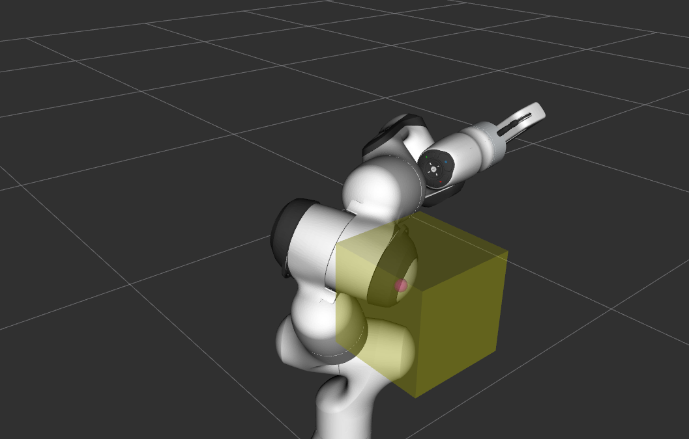

Using Bullet for Collision Checking
{kind=link}
In addition to the Flexible Collision Library (FCL), Bullet Collision Detection is available as a collision checker. The tutorial builds on top of the Visualizing Collisions tutorial to show collisions.
Furthermore, Continuous Collision Detection (CCD) is available and demonstrated with Bullet.
Getting Started
If you haven’t already done so, make sure you’ve completed the steps in Getting Started.
Running the Code
Roslaunch the launch file to run the code directly from moveit_tutorials:
roslaunch moveit_tutorials bullet_collision_checker_tutorial.launch
You should now see the Panda robot and a box both with interactive markers which you can drag around. Note that different to FCL, Bullet does not calculate all individual contact points for a shape but only the point of deepest penetration.
Left: FCL collision results. Right: Bullet collision results.
Please note that the current implementation of Bullet as a collision detector is not thread safe as the internal collision managers are mutable members.
Continuous Collision Detection
Additionally, Bullet has continuous collision capabilities. This means that it can be guaranteed that no collision occurs during the transition between two discrete robot states with the environment. To get a demonstration of the CCD click the Next button of the moveit_visual_tools panel on the bottom left in RViz. The interactive robot disappears and the robot appears in a state where its hand is just behind a box. On pressing next again, the robot jumps to a configuration where the hand is right in front of the box. In both states, no collision is detected (see terminal output).
Left: robot in configuration 1. Right: robot in configuration 2.
On a following Next, CCD is performed using a casted robot model between the two discrete poses. A collision is reported
(see terminal output for details).
{kind=link}
Pressing Next one more time finishes the tutorial.
Relevant Code
The entire code can be seen here in the moveit_tutorials GitHub project. A lot of information necessary for understanding how this demo works is left out to keep this tutorial focused on Bullet. Please see Visualizing Collisions for code explanation regarding the visualizing of the collisions.
The code starts with creating an interactive robot and a new planning scene.
InteractiveRobot interactive_robot("robot_description", "bullet_collision_tutorial/interactive_robot_state");
g_planning_scene = std::make_unique<planning_scene::PlanningScene>(interactive_robot.robotModel());
Changing the collision detector to Bullet
The active collision detector is set from the planning scene using the specific collision detector allocator for Bullet.
g_planning_scene->setActiveCollisionDetector(collision_detection::CollisionDetectorAllocatorBullet::create());
For understanding the interactive interactive_robot, please refer to the Visualizing Collisions tutorial.
Continuous Collision Detection
For the CCD demonstration, the Panda robot is loaded again and with it a new planning scene created. Bullet is again set as the active collision detector.
robot_model::RobotModelPtr robot_model = moveit::core::loadTestingRobotModel("panda");
auto planning_scene = std::make_shared<planning_scene::PlanningScene>(robot_model);
planning_scene->setActiveCollisionDetector(collision_detection::CollisionDetectorAllocatorBullet::create());
The box is added and the robot brought into its position.
Eigen::Isometry3d box_pose{ Eigen::Isometry3d::Identity() };
box_pose.translation().x() = 0.43;
box_pose.translation().y() = 0;
box_pose.translation().z() = 0.55;
auto box = std::make_shared<shapes::Box>(BOX_SIZE, BOX_SIZE, BOX_SIZE);
planning_scene->getWorldNonConst()->addToObject("box", box, box_pose);
robot_state::RobotState& state = planning_scene->getCurrentStateNonConst();
state.setToDefaultValues();
double joint2 = -0.785;
double joint4 = -2.356;
double joint6 = 1.571;
double joint7 = 0.785;
state.setJointPositions("panda_joint2", &joint2);
state.setJointPositions("panda_joint4", &joint4);
state.setJointPositions("panda_joint6", &joint6);
state.setJointPositions("panda_joint7", &joint7);
state.update();
robot_state::RobotState state_before(state);
Finally, a collision check is performed and the result printed to the terminal.
collision_detection::CollisionResult res;
collision_detection::CollisionRequest req;
req.contacts = true;
planning_scene->checkCollision(req, res);
ROS_INFO_STREAM_NAMED("bullet_tutorial", (res.collision ? "In collision." : "Not in collision."));
This code is repeated for the second robot configuration. For the CCD check, we display both robot states at the same time.
moveit_msgs::DisplayRobotState msg_state_before;
robot_state::robotStateToRobotStateMsg(state_before, msg_state_before.state);
robot_state_publisher_2.publish(msg_state_before);
Now a continuous collision check using the two different robot states can be performed. As the planning scene does not yet contain any direct functions to do CCD, we have to access the collision environment and perform the check.
res.clear();
planning_scene->getCollisionEnv()->checkRobotCollision(req, res, state, state_before);
ROS_INFO_STREAM_NAMED("bullet_tutorial", (res.collision ? "In collision." : "Not in collision."));
Note that the terminal output displays “In collision.”.